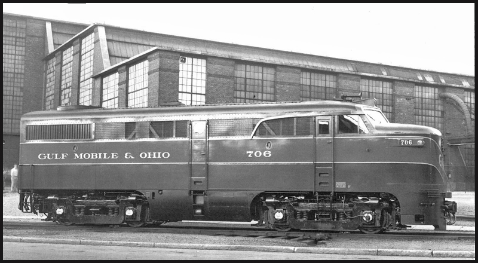
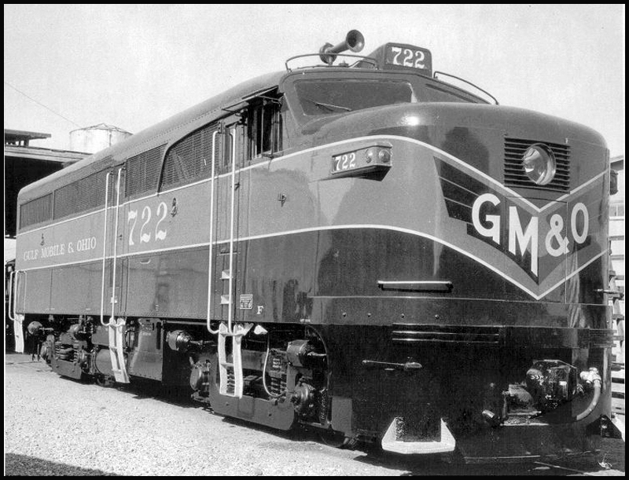
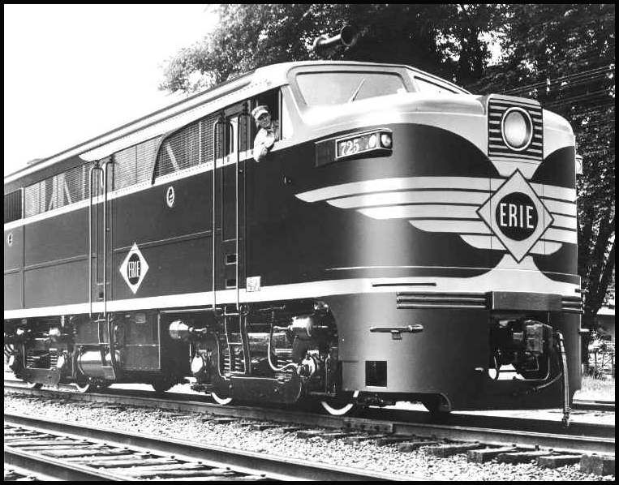

Alco Builders photo - December 1945 - Authors collection.
| The diesel invasion began, slowly at
first, in the 1920's as small diesel switchers began
appearing on American railroads. The trend continued
gradually through the 1920's and 30's and up to
World War Two. But the diesels were few and
still mostly confined to switcher duty, and steam
power on the mainlines remained essentially
unchallenged up to and through the war years. Small amounts of passenger diesels were in service before the war, early EMD E-units and the Alco DL109, but they were still a tiny percentage of power, compared to steam. But
immediately after the war the diesel invasion
switched into high-gear, as diesel locomotives began
replacing all steam, including mainline steam.
Ramping up in the late 1940's, the diesel invasion
would replace virtually all steam power in less than
a decade. The EMD FT was introduced in 1939, and because of wartime restrictions, was the only road freight diesel produced during WWII.1 Alco and Baldwin were restricted to only building mainline steam locomotives, and diesel switchers, during the war. But right after the war Alco introduced its competitor to the EMD FT, the "Alco-GE 1500", 1,500 horsepower, later to be known as the FA1, powered by Alcos new 244 engine. Construction of the prototypes for
Alco model DL-208 (A-unit) and DL-209 (B-unit)
began in 1945, and by December of 1945 the 3-unit
ABA set was complete, and posed for their builder
photos outside the Schenectady plant in December
1945 and January 1946.
 Alco Builders photo - January 1946 -
Authors collection.
The 3-unit ABA set was numbered
1500, 1501 and 1502, and was painted in a 2-tone
grey scheme with a red stripe along the bottom.
The lighter striping was aluminum.2
There are no known color photos of the
demonstrators, however there is Alco promotional
literature that contains illustrations of the
units in this scheme.
Life
Magazine, April 1946. Author's collection.Their official model designation was DL-208 and DL-209. They were called "The Alco-GE 1500's" for promotional purposes. The model designation "FA" was not used for the FA1 or FA2's until about 1950.2 The Gulf Mobile & Ohio railroad was the first railroad to order the new Alco freight cabs. Initially the GM&O order was penciled in as the earlier DL-202 and DL-203, which were the "Black Maria" demonstrator set.2 However, before production began, the order was changed to the upgraded DL-208 and DL-209 (the FA1) and no "production" Black Marias were ever built, only the ABA demonstrator set. The FA1 ABA demonstrator set, 1500, 1501 and 1502, were built as part of the GM&O order, however, when new they were briefly painted in an Alco demonstrator scheme and were sent on a 46 day shake-down tour on the D&H in early 1946. They were then repainted into GM&O colors, renumbered to GM&O 700, B1 and 701, and were at work on the GM&O by May 1946. (The tour on the D&H and the delayed delivery to the GM&O was because of a four month railroad workers strike.2 ) The FA1 demonstrator A-units had three distinct external styling cues that set them apart from the later FA1's and FA2's. The styling was clearly influenced and adapted from the Alco PA: 1. The same curved strip behind the cab windows, as seen on the PA. 2. The same streamlined fuel tank side skirt, as also seen on the PA. 3. A unique lowered headlight, not seen on the PA, and only seen on the first group of FA1's.  1946 Alco Builder photo, from
1947 Alco 1500 operators manual, authors
collection.
 1946 Alco
Builder photo, Author's collection.
GM&O 700
through 735, (which included the
demonstrator set), the first 36 FA-1 units
built, all had these unique features. All 36
units in this style were only owned by the
GM&O. The first 36 GM&O units all had
the lowered headlight and the curved drip-strip
behind the cab, however only the first nine or
ten had the fuel tank side skirting. (which was later removed on those units) Starting
with GM&O number 736, built in November
1946, those early styling cues were deleted, and
all future FA1's and FA2's did not have them. (The roof-mounted numberboard above the cab windows was not an Alco FA1 feature, it was a GM&O feature.)In the spring of 1946 Alco ran two advertisements in Life Magazine, to introduce the post-war world to the new "1500" Freight cabs:   Life Magazine, May 1946. Author's collection. Also in 1946, Alco released a
beautiful color sales brochure. This was created
for the railroads, and sent to their motive
power departments to show-off the new locomotive
and generate sales. This brochure is owned by www.classicstreamliners.com,
and is reproduced here with permission, thank
you!
 1946 Alco Sales brochure. From the
collection of
www.classicstreamliners.com, used with permission, thank you!  1946 Alco Sales brochure. From the
collection of www.classicstreamliners.com,
used with permission, thank you!  1946 Alco Sales brochure. From the collection of www.classicstreamliners.com, used with permission, thank you!  . 1946
Alco Sales brochure. From the
collection of www.classicstreamliners.com, . 1946
Alco Sales brochure. From the
collection of www.classicstreamliners.com,
used with permission, thank you!  1946 Alco Sales brochure. From the
collection of www.classicstreamliners.com,
used with permission, thank you!  1946 Alco Sales brochure. From the collection of www.classicstreamliners.com, used with permission, thank you!  1946 Alco Sales brochure. From the collection of www.classicstreamliners.com, used with permission, thank you!  1946 Alco Sales brochure. From the collection of www.classicstreamliners.com, used with permission, thank you! And one more piece of Alco
literature from 1946:
 1946 Alco advertisement. From
the collection of www.classicstreamliners.com,
used with permission, thank you! And the last known piece of 1946 "demonstrator style" FA1 artwork is this interesting illustration done in the Erie railroad scheme: 
Alco company illustration, probably
from 1946.
The original source of this illustration is unknown, it was discovered on Pinterst with no documentation. However it is almost certainty Alco artwork from 1946, made for the Erie Railroad. Its a combination of a real photo, with some painting done by the Alco art department. (you can tell that the headlight, and the Erie paint scheme, were painted onto the photo.) Note that this illustration has only one of the three "demonstrator style" features! Only the "Alco PA style" drip-strip behind the cab. There are no fuel tank skirts, and the headlight has been moved up in the "regular" production style. No actual FA1's were ever built in this style, this particular configuration is only known in this one illustration. As discussed above, only the first 36 Alco FA1's were built in the "demonstrator style" with the three distinct demonstrator features: drip-strip behind the cab, fuel skirt, and lowered headlight. And only the first nine or ten A-units had the fuel tank skirt. (It is currently unknown how many B-units had the fuel tank skirt.) These first 36 A-units, GM&O 700 through 735, which included the demonstrator set, were built between December 1945 and November 1946.2 Then, starting with GM&O 736, built in November 1946, Alco FA1's changed to the "standard" configuration we all know:  A beautiful ABBA set of LV Alco FA's leads a train east out of Sayre in 1960. In the lead is the LV's FA1 "class unit" number 530. Photo by Mac Owen, Joseph Testagrose collection. used with permission. Bibliography: 1. https://en.wikipedia.org/wiki/EMD_FT 2. Book: "Alco's FA, Running in the Shadow" by Craig Rutherford, 2005. |